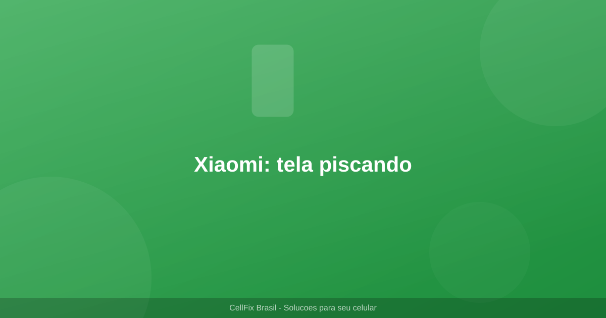

Xiaomi Redmi Note 13: tela piscando apos atualizacao - como resolver

Voce atualizou o software do seu Xiaomi Redmi Note 13 e agora a tela fica piscando, tremendo ou apresentando faixas estranhas? Isso e mais comum do que parece e, na maioria das vezes, tem solucao sem precisar ir a assistencia tecnica.
Nesse artigo, vou te mostrar 6 solucoes testadas para resolver o problema de tela piscando no Redmi Note 13 apos atualizacao.
Por que a tela pisca apos atualizacao?
- Taxa de atualizacao alterada - a atualizacao pode ter mudado a configuracao de 60Hz/120Hz
- Modo ESC defeituoso - o controle de brilho adaptativo pode ter bug
- Driver de display incompativel - o driver do painel pode nao ser compativel com a nova versao
- Cache do sistema corrompido - arquivos temporarios podem ter sido afetados
- Bug conhecido do MIUI - versoes especificas podem ter esse problema reportado
6 solucoes para tela piscando no Redmi Note 13
Solucao 1: Reinicie em Modo Seguro
O Modo Seguro inicia o celular com apenas os apps essenciais. Se a tela para de piscar, o problema e um app.
- Segure o botao de Energia ate aparecer as opcoes
- Toque e segure em Desligar ate aparecer Modo Seguro
- Toque em Modo Seguro e confirme
- Use o celular por alguns minutos
- Se parou, desinstale apps recentes ate encontrar o culpado
- Reinicie normalmente para sair do Modo Seguro
Solucao 2: Verifique as configuracoes de tela
- Va em Configuracoes e Tela e brilho
- Mude a Taxa de atualizacao entre 60Hz e 120Hz
- Desative o Brilho adaptativo e teste
- Desative o Modo Escuro e teste
- Restaure configuracoes de tela para o padrao
Solucao 3: Limpe a particao de cache
A atualizacao pode ter corrompido arquivos temporarios. Limpar a particao de cache resolve muitos problemas de display.
- Desligue o celular completamente
- Segure Volume Cima + Botao de Energia
- No menu de recuperacao, selecione Wipe Cache Partition
- Confirme com o botao de energia
- Selecione Reboot System Now
Solucao 4: Redefina as configuracoes de acessibilidade
Algumas configuracoes de acessibilidade podem conflitar com o display apos atualizacao.
- Va em Configuracoes e Configuracoes adicionais
- Toque em Acessibilidade
- Desative alto contraste e cores invertidas
- Desative reducao de animacoes se estiver ativa
- Teste a tela apos cada alteracao
Solucao 5: Atualizacao do MIUI
A Xiaomi pode ter lancado uma correcao para o bug. Verifique se ha atualizacao disponivel.
- Va em Configuracoes e Sobre o telefone
- Toque em Versao do MIUI
- Toque em Verificar atualizacoes
- Se houver atualizacao, instale-a
- Reinicie o celular apos a atualizacao
Solucao 6: Restauracao de fabrica
Se nada funcionou, a restauracao de fabrica e a ultima opcao antes de ir a assistencia.
- Faca backup de fotos, contatos e arquivos importantes
- Va em Configuracoes e Sobre o telefone
- Toque em Restauracao de dados (limpar todos os dados)
- Confirme com sua senha
- Espere o processo finalizar (pode levar 10-15 minutos)
- Configure o celular como novo e teste a tela
Tabela: solucoes por ordem de eficiencia
| Solucao | Dificuldade | Tempo | Taxa de sucesso |
|---|---|---|---|
| Modo Seguro | Facil | 5 min | 30% |
| Config. de tela | Facil | 3 min | 25% |
| Limpar cache | Media | 5 min | 20% |
| Acessibilidade | Facil | 3 min | 10% |
| Atualizar MIUI | Facil | 15 min | 10% |
| Restaurar fabrica | Dificil | 30 min | 5% |
FAQ - Perguntas frequentes
A tela piscou uma vez e parou. Preciso me preocupar?
Se piscou apenas uma vez e nao voltou a acontecer, provavelmente foi um glitch temporario. Monitore por alguns dias. Se voltar a acontecer, siga as solucoes deste artigo.
A tela pisca apenas em apps especificos. O que fazer?
Isso indica incompatibilidade do app com a nova versao do MIUI. Verifique se o app tem atualizacao disponivel na Play Store. Se nao tiver, desinstale e reinstale ou entre em contato com o desenvolvedor.
Posso voltar para a versao anterior do MIUI?
Sim, e possivel fazer um downgrade do MIUI. Porem, isso anula a garantia e pode causar problemas. Recomendamos primeiro tentar todas as solucoes deste artigo. Se precisar fazer downgrade, procure assistencia tecnica autorizada Xiaomi.
A tela piscando drena mais bateria?
Sim. A tela piscando consome mais bateria porque o display fica constantly re-renderizando. Apos resolver o problema, voce notara que a bateria volta ao normal.
O problema comecou apos instalar um app e nao apos atualizacao. E o mesmo?
Pode ser, mas as solucoes sao semelhantes. Comece pelo Modo Seguro (Solucao 1) para identificar o app problematico e desinstale-o. Se nao resolver, siga as demais solucoes.